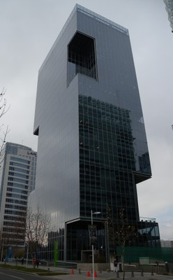
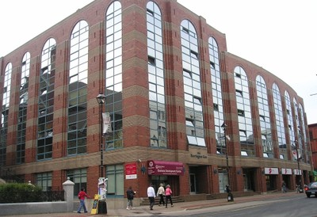

Glass [EWG]
Glass curtain walls, storefront glass systems, or any other exterior walls where glass windows cover more of the walls by area than any other material. Also includes solar panelled exterior walls, where photovoltaics modules are integrated directly into a building envelope by replacing curtain walls (Building Integrated Photovoltaics).

A highrise office building with glass curtain walls, Santiago, Chile (S. Brzev)
A building with glass curtain walls, Vancouver, Canada (S. Brzev)

Exterior walls in this building are mostly of glass and masonry, however glass is considered to be a prevalent material, Halifax, Canada (S. Brzev)

Solar (photovoltaic) modules as exterior walls, Vancouver, Canada (L. Stamenic)

Solar (photovoltaic) modules as exterior walls, United Kingdom (L. Stamenic)